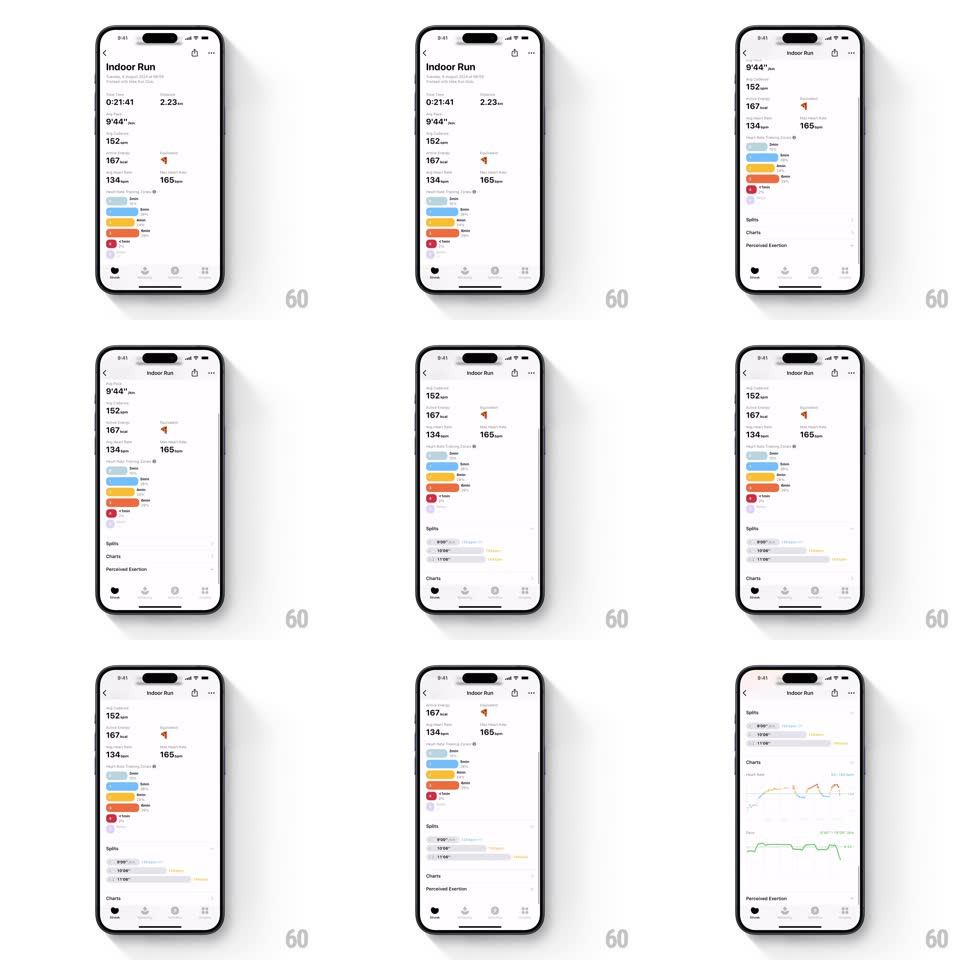

Media
Frame-by-frame

Rebuild this interaction 1:1: Gentler Streak's activity detail - an Indoor Run summary whose heart-rate zone bars stagger in, and accordion sections (Splits, Charts) spring open with their own staggered rows.

Rebuild this interaction 1:1: Gentler Streak's activity detail - an Indoor Run summary whose heart-rate zone bars stagger in, and accordion sections (Splits, Charts) spring open with their own staggered rows.
## Integration
Integration: stack-agnostic spec - springs given as stiffness/damping, timed motions as duration + curve; map every value to your framework and animation library of choice.
## Scene
An activity detail screen ("Indoor Run", date): a stat stack (duration 0:21:41, distance 2.23 km, pace, heart rate, elevation), a zone-breakdown list (colored horizontal bars per heart-rate zone with durations), then collapsible Splits and Charts sections and a Perceived Exertion row.
## Motion spec
Pattern: springy accordion + staggered stat reveal.
- On open: stats fade up in a cascade (translateY 12px, 200ms, 60ms stagger); then zone bars grow from zero width to their share (400ms, ease-out, 80ms stagger top to bottom) with labels fading in as each bar lands.
- Tap Splits: the section expands with a height spring (~340/22, slight overshoot), rows inside staggering in (translateY 10px + fade, 150ms, 50ms apart); the chevron rotates 90 to 0 (200ms). Content below pushes down with the same spring, no jumps.
- Tap Charts: same accordion physics; each chart then draws its line (stroke-dash, 600ms) with the area fill fading in behind (300ms).
- Collapsing reverses with a faster, damped spring (~420/30); rows fade out together rather than staggering out.
- The whole page scrolls normally; accordions animate independently of scroll position.
## Calibration
- Zone bar colors follow the standard exertion ramp (blue, light blue, green, orange, red); widths are proportional to time-in-zone.
- Only one accordion needs to be open at a time is NOT a rule - both can stay open; each animates independently.
## Reduced motion
Sections expand instantly; bars and lines render complete.
## Don't miss
- The zone bars are rounded and left-aligned with the zone label at their left edge.
- Stat typography: big value, small gray unit - never animate the units separately from values.